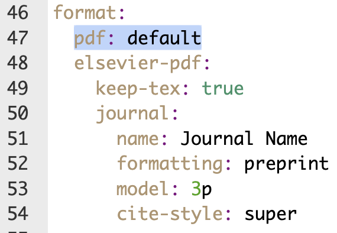

4 Writing Articles with Quarto
4.1 Setting Up Template
You can find templates made by quarto and others for many popular journals (PLOS, ASA, Elsevier, …).
Set up a article with a journal template in your terminal:
quarto use template quarto-journals/elsevierIt will ask you what to call the sub-directory for your article files:
Directory name: › my_elsevier_articleOne small change — add the line
pdf: defaultin the YAML for it to compile without error:
4.2 Writing Your Article
When writing your article in Qaurto, you can use
markdown (headers with
#, bold with**, italics with*, etc.)citations and cross references (with
@)LaTeX formulas (with single or double dollar signs
$$)R code to include plots and tables
If you use Quarto in your everyday research workflow, it will be a quick transition to writing a paper with Quarto.
4.3 Preview the Final Product
Click “Render” in Rstudio. The article I created from the template can be previewed here.